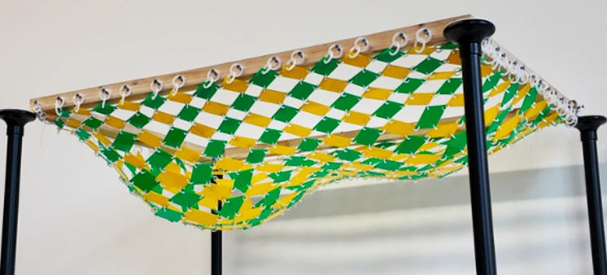
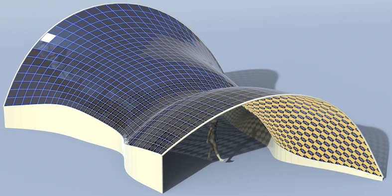
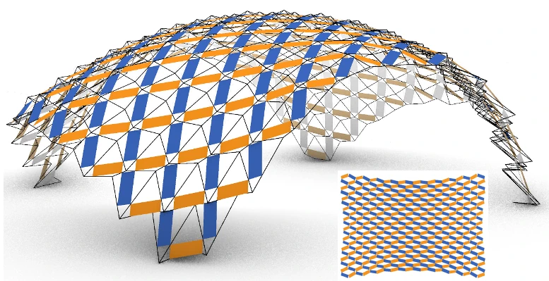

Discrete differential geometry
I study how the geometry of smooth surfaces carries over to discrete meshes. One focus is isogonal nets, in which two families of curves meet at a constant angle.

I am a Ph.D. candidate in mathematics at Xi'an Jiaotong University. My research draws on discrete differential geometry to study how quadrilateral meshes can be generated and optimized for surface design. I am interested in exploring how geometric optimization can account for the constraints of fabrication.
I study how the geometry of smooth surfaces carries over to discrete meshes. One focus is isogonal nets, in which two families of curves meet at a constant angle.
I investigate how to construct quadrilateral meshes and vary their shape while preserving geometric constraints, such as prescribed angles.
I am interested in how fabrication constraints can guide geometric optimization. In kirigami design, for example, I study how the geometry of a cut pattern controls the shapes it can take as it opens.
I will present our paper, Quad-mesh based isogonal nets and computational design, at SIGGRAPH Asia 2026 in Kuala Lumpur, Malaysia.

PublishedHui Wang and Yongxiang Tan
ACM Transactions on Graphics, 45(6), 1–20 · SIGGRAPH Asia 2026

AcceptedCancan Liu, Yongxiang Tan, Yuyang Liu, Changfa Zhang, and Hui Wang
Journal of Computer-Aided Design & Computer Graphics (in Chinese) · 2026

Published